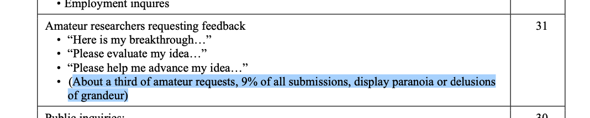

I deeply believe that whatever reality is, it is also it's own contradiction. Whatever it is, it is also not it (see also Neti Neti). It's like the universe is consistently inconsistent
In terms of formal logic, I would say reality is akin to an inconsistent knowledge base. Something that, paradoxically, holds all mutually opposite and mutually exclusive meanings at the same time
And these paradoxes, sometimes called dualities, have been represented across many different cultures and times:
Most of the time I feel caught up in between the contradictions, trying to find something to anchor myself to. But, there is nothing to anchor to
Archimedes suffered this ache, which he so famously expressed when saying:
"Give me a lever and a fulcrum where to place it, and I will move the world"
The idea of a fulcrum, of a fixed point, the anchor, an origin, a resting point; is so powerful, that it can truly move the world
Newton successfully moved the world by anchoring his wordlview, his philosophical ideas about the universe, into a formal mathematical language, and into axioms that we now call "Newton's laws of motion"
These axioms of Newtonian physics are the cornerstone, the fulcrum, the pillars of today's physics. So much so, that whenever someone brings up a physical phenomena, or even idea of one, that could potentially violate these "laws", they are usually summarily discarded by anyone serious in physics™
 Image from: "Responding to Mechanical Antigravity" NASA/TM—2006-214390
One of these phenomena, is a form of Anti-Gravity, called Mechanical Antigravity, and thought to be caused by a:
"uni-directional force in free space"
Essentially, it is commonly believed, that if there is an object/mass in "free space" (sorounded by "nothing"). Then that object can never displace its center of mass (by itself, without an external mass or force). The object could technically release some of it's mass to get propulsion, but that would still leave its center of mass in the same spot in space
This concept is typically used as an explanation for why:
I believe that the main issue here is not one of physical reality, but rather in how we interpret the phrase "uni-directional force in free space"
First, what does uni-directional mean? If there is an opposite and equal reaction to any and every action, there can't ever be a uni-directional force, in any space. A force would necessarily need to "happen both ways"
Second, what does free space mean? Have you ever experienced free space? To me at least, it just doesn't seem to exist at all
So it seems like the whole concept doesn't even make sense. But only because it is somehow ill-defined relative to commonly accepted models of physics. The main idea can still be salvaged. In fact, taking the spirit of the idea, there are multiple theoreticaly possible anti-gravity devices, like the Alcubierre drive and other propellantless drives
Interestingly enough, the main concept behind the Alcubierre drive is that:
"Because there is no well-defined "center of mass" in curved spacetime, general relativity allows a stationary object to, in a sense, "change its position" in a counter-intuitive manner, without violating conservation of momentum"
Curioursly, this doesn't really have to do with Newton's laws of motion directly, or with the equations that represent them. Rather, it is a phylosophical issue having to do with Newton's choice of an absolute space
See, because Newton chose an absolute space, conceptually, it means there are fixed points, which would mean being able to precisely locate and measure anything contained within that absolute space. Hence, nothing could possibly "move itself", because according to Newton's first law, if something is stationary in a fixed space, then the only way that thing can be moved, it's if something else moves it (which weirdly could also imply that nothing can move)
Well, according to Leibniz, "space makes no sense except as the relative location of bodies, and time makes no sense except as the relative movement of bodies". Then again, Ernst Macht in the late 1800s challenged absolute space by proposing the Mach principle, which says that "mechanics is entirely about relative motion of bodies and, in particular, mass is an expression of such relative motion". And of course, Einstein famously expressed his models in relativistic terms
Ok, so we aren't in completely uncharted territory here. It is not controversial that space can be modeled as relative instead of absolute, and it is also commonly accepted that there seems to be no center of gravity of the universe. Which essentially also means that there are no fixed points, no fulcrums anywhere
Essentially, our understanding of Anti-Gravity needs an anchor of meaning. What do we mean when we say Anti-Gravity? Do we mean any concept or device that can counteract the forces of gravity? like an airplane, a helicopter, or even a rocket?
Wikipedia defines Anti-Gravity as: "a hypothetical phenomenon of creating a place or object that is free from the force of gravity. It does not refer to either the lack of weight under gravity experienced in free fall or orbit, or to balancing the force of gravity with some other force, such as electromagnetism and aerodynamic lift"
Funnily, NASA's "Responding to Mechanical Antigravity" doesn't provide a specific definition of "Mechanical Antigravity" nor any definitions of "Antigravity". The closest might be part of the conclusion, where they say: "errant interpretations of mechanical forces are common. Two devices in particular involve oscillating masses that claim net thrust and gyroscopic devices that claim antigravity effects. The oscillation thrusters are misinterpretations of differential friction, while the gyroscopic devices misinterpret torques as linear thrust."
There seems to be some spectrum. On one end, the more sci-fi definition is maybe too idealistic to satisfy, at least by current mainstream understanding of physical concepts, like force and action/reaction (although conceptually this hurdle could potentially be circumventable, considering that an interpretation of Einstein's models, is that gravity isn't a force, but rather just different spacetime curvature. Similar to how Newtonian models define "inertial" forces as "fictitious")
On the other end, NASA doesn't really provide much of a working definition, except examples of what they don't consider anti-gravity, mainly because they apparently think that the creators of those theories and devices are wrong and maybe even "display paranoia or delusions of grandeur"
Orbital Anti-Gravity is the physical phenomenon that happens when counteracting gravity with velocity
This definition includes all currently known types of orbits. And it can be used to create a physical and mathematical model of Orbital Anti-Gravity. This allows modelling uncommon types of orbit trayectories, using only basic orbital mechanics formulas
Wait, isn't Orbital Anti-Gravity just another name for Centrifugal Force? Well, yes and no. Yes, in the sense that the Orbital Mechanics equations for satellite orbits are partly based on the notion of a Centrifugal Force counteracting Gravity. However, in a Newtonian model, a Centrifugal Force is defined as an "inertial" (and thus "fictitious" force). And in General Relativity, an object in free fall is subject to no force" moving along a geodesic
Essentially, Newton's first law is overrated. We can model orbits just fine without it. And in fact, that's exatly what Einstein did by using the Equivalence Principle as the cornerstone of General Relativity to define the geodesics
The Equivalence Principle can also be interpreted as the equivalence between circular motion and gravity (which is the basis for the orbital speed equation). And which will also be the conceptual pillar for Orbital Anti-Gravity
Part 2 will focus on the mathematical model; including the fundamental equations, tables with calculations, charts, animations, simulations and source code. Tentative title: "Orbital Anti-Gravity Part 2: Modeling powered orbits at very low altitude"
Part 3 will be about device design and manufacturing with current technologies; including animations, 3d models, calculations, practical material options and power sources
If you want to further discuss any of the topics exposed on this website, email me at nbrenner at the big G